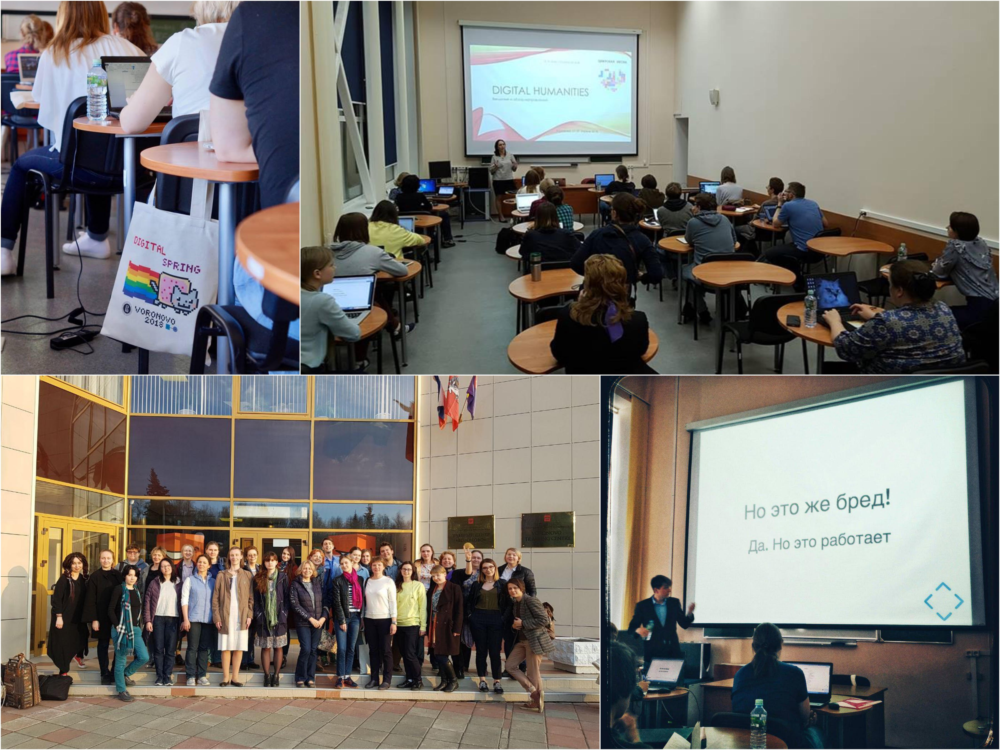

Современный цифровой гуманитарий похож на клиента IKEA. Вроде всё вокруг готовое — бери инструменты, бери инструкцию, собирай и применяй для своих нужд. Потому и проблем поначалу не ждешь — умные ведь инженеры (то есть программисты) делали, гаечка к гаечке. Потом, правда, выясняется, что этот вот кран — под европейский стандарт, нам в России не подходит, у этого стула инструкция только по-шведски, а вон та футуристического вида кухня вообще явно не про нас — у нас еще и туалет-то не оцифрован. Да и пространство для всей этой мебели и гарнитуров все-таки надо создавать самим, в голое поле не привезешь. В общем, многое цифровому гуманитарию приходится делать самому: разбираться с программами и инструментами, подстраивать их под свои исследования, заниматься локализацией передовых методов и знаний... А главное — искать единомышленников вокруг себя и создавать то самое пространство-сообщество.
Отсюда и тема номера: Сделай сам
А чтобы хоть немного следовать своим же проповедям, мы сделали сайт Вестника: vdigital.me. Отныне все выпуски здесь

Французская революция стала моделью для многих политических трансформаций в Европе. Однако у неё самой не было образца для подражания — и потому особенно интересен процесс строительства институтов «с нуля» после падения абсолютизма. Авторы статьи применяют количественные методы для изучения работы первого революционного парламента Франции (Национальной конституционной ассамблеи) — и с помощью статистики раскрывают неочевидные механизмы новорожденной парламентской демократии.
Материалом для анализа послужили почти 45 тыс. стенограмм заседаний Ассамблеи 1789-1790 годов, доступных в French Revolution Digital Archive. Основываясь на методе тематического моделирования, исследователи вводят два основных параметра количественной оценки парламентских речей:
Первый вывод исследователей — общее повышенное тяготение первого парламента революции к речам с высокой «новизной». Большей «новизной» предсказуемо обладают представители левого радикального крыла (среди рекордсменов — Робеспьер), меньшей — правые консерваторы-монархисты. Таким образом, еще до всякого содержательного анализа количественные методы текста успешно различают политические спектры.
Свойство большинства речей — сочетание высокой новизны с недолговечностью поднятой темы; однако встречаются и исключения, когда новое прочное закрепляется в повестке. Для формализации таких, несомненно, значимых событий авторы статьи вводят третью меру — «резонанс», соотношение новизны и недолговечности. Высокий резонанс означает, что поднятые в речи новые вопросы многократно обсуждались в последующих речах.
Именно высокий резонанс характеризует ключевых фигур Национальной конституционной ассамблеи, причем как слева (Робеспьер, Петион де Вильнёв), так и справа (Жан-Сифрен Мори) — консерваторы в парламенте занимались именно «консервацией», то есть стремились удерживать повестку в одном русле. За счет высокой «долговечности» тем правые могли иметь не менее высокие показатели «резонанса», несмотря на пониженную «новизну» их речей.
Лев Манович, представлять которого излишне, выложил силлабус своего курса «Studying culture and media in the age of big data», прочитанного этой весной студентам Нью-Йоркского университета. Силлабус хорош в первую очередь как источник вдохновляющих ссылок. Здесь
...а больше всего — инструменты, визуализации, выдающиеся примеры исследований.
И еще Манович дорог нам тем, что тоже ценит «тени забытых предков». Много ли мест, где ссылки на инструменты для Big Data могут соседствовать со статьей о Викторе Шкловском? А ведь Манович не только Шкловского, но и Ярхо знает.
С момента прошлой рассылки мы тоже кое-что сделали сами — ведь пространство для DH само себя не создаст
Во-первых, мы наконец развиртуализировались — провели День открытх дверей нашего центра. Хотя центр как объединение людей, как исследовательское сообщество, как образовательная среда и как разветвленная сетевая структура DH-энтузиастов, простирающаяся далеко за пределы Вышки, существует достаточно давно, мы впервые физически принимали гостей на своей территории. Да и территория у нас недавно, так что руководитель школы лингвистики Екатерина Рахилина даже подарила нам наше первое комнатное растение и первый же чайник. Что еще там было — читайте здесь.
Во-вторых, как и было обещано в предыдущей рассылке, в конце апреля мы уехали в Вороново и устроили там 2,5 дневный интенсив для желающих прокачаться в использовании инструментов и методов Digital Humanities.
На школу съехались три десятка участников со всей России — университетские и школьные преподаватели, исследователи, работники культуры, просто увлеченные люди. И работать с ними было прекрасно.
Еще одна вещь, которую мы решили сделать сами, — список наиболее влиятельных книг, статей и людей в DH. Мы, конечно, не первые с такими опросами, ведь DH-сообщество хлебом не корми — дай порефлексировать на тему самих себя. Но нам интересны именно ваши ответы — хочется понять, на кого ориентируется и что читает ядро русского DH-сообщества. Пожалуйста, потратьте 5-7 минут здесь.
На основе ваших ответов мы попробуем сделать и эту рассылку «более лучше» и содержательнее.
16-17 мая в Пермском университете пройдет конференция «Естественнонаучные методы в цифровой гуманитарной среде». Мы уже анонсировали её в прошлой рассылке, а теперь делимся ссылкой на программу, которую опубликовали несколько дней назад организаторы.
Как ни удивительно, до сих пор у EADH, одной из сильнейших ассоциаций в ADHO, не было своей конференции. Крупнейшей в Европе была немецко-австрийско-швейцарская DHd, за ней следовали DH Benelux и DHN. Первая «общеевропейская» конференция EADH состоится 7-9 декабря 2018, место проведения — Ирландский национальный университет в Голуэе. Один из двух подтвержденных keynote speakers — академик РАН, выдающийся лингвист Владимир Плунгян, а в программном комитете конференции — руководитель нашего центра Анастасия Бонч-Осмоловская.
Подать заявку на участие в EADH 2018 можно до 18 июня.
В рамках традиционной ежегодной конференции «Стены и мосты» в РГГУ будут обсуждаться проблемы исторической науки в контексте современной междисциплинарности. Предлагается на примере различных проектов рассмотреть, когда гуманитарные исследования возводят стены вокруг, а когда строят мосты для научного взаимодействия.
В этом году, помимо прочего, предлагается обсудить сквозную тему: «Культура данных и гуманитарные исследования», в центре обсуждения окажется проблематика датафикации гуманитарных исследований и развития цифровых гуманитарных наук как поля для междисциплинарных подходов к данным и методам их обработки.
Краткие тезисы — название доклада и аннотацию — можно подавать до 10 мая
Каталог историко-ориентированных систем digitalhistory.ru создали в Центре цифровой гуманитаристики Пермского университета. Это агрегатор исторических баз данных и цифровых архивов, электронных музеев и библиотек, коллекций исторической периодики, оцифрованных мемуаров, дневников и воспоминаний, а также иных источников исторических данных. Для навигации по источникам реализован расширенный поиск: ресурсы можно фильтровать по области знания, типу, охватываемому периоду, географии. Таким образом, digitalhistory.ru и сам является историко-ориентированной информационной мета-системой. Сейчас в базе агрегатора уже 1200 различных ресурсов. Создатели каталога также занимаются изучением и типологизацией современных историко-ориентированных систем: выделяют в них группы в зависимости, изучают применение разных технологических решений, оценивают популярность конкретных типов баз данных и форматов хранения графической информации.
Стилометрия — популярное направление (и одновременно метод) исследований в Digital Humanities. Основная идея стилометрии заключается в том, что авторский "отпечаток пальца" проявляется в разных частотностях употребления наиболее "массовых" слов — как правило это союзы, предлоги, местоимения, а также наиболее частотные существительные.
Эта простая идея еще ждет теоретического осмысления, зато практически она подтверждена неоднократно: на основе списка из 100/300/500 самых частотных слов можно надежно отличить Толстого от Достоевского или, например, выявить настоящего автора под литературным псевдонимом.
Убедиться в том, что стилометрия работает, каждый может самостоятельно. Благодаря создателям инструмента Stylo для этого не нужно ничего считать или программировать самому. Действуя по нашей инструкции, вы сможете за 15-30 минут научиться работать со Stylo и далее самостоятельно экспериментировать с определением авторства и количественной стилистикой.
Заранее просим прощения у мастеров стилометрии, которым наша инструкция может показаться примитивной и поверхностной. Мы старались сделать её в первую очередь легкой для пошагового выполнения не-программистами — и потому кое-где упрощали и скругляли.
Найти три прошлых выпуска, а также подписаться можно тут